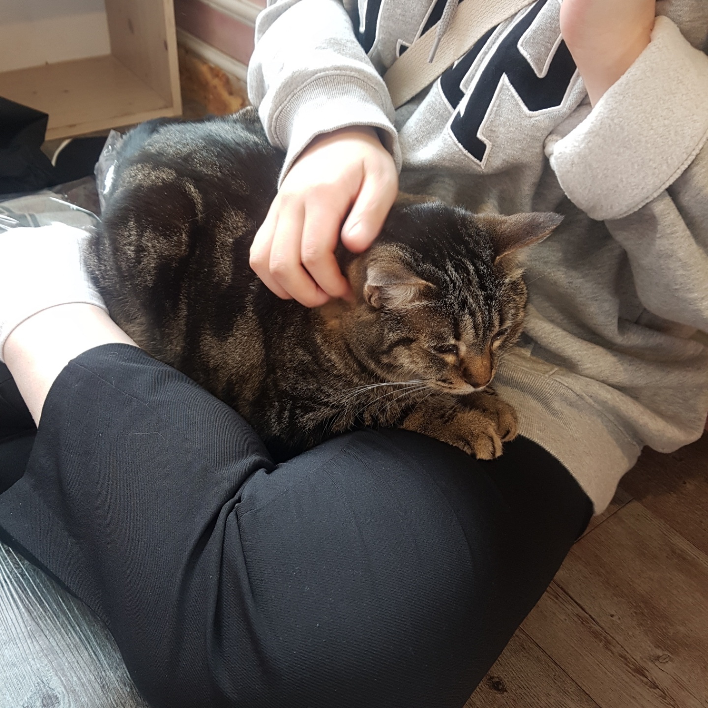
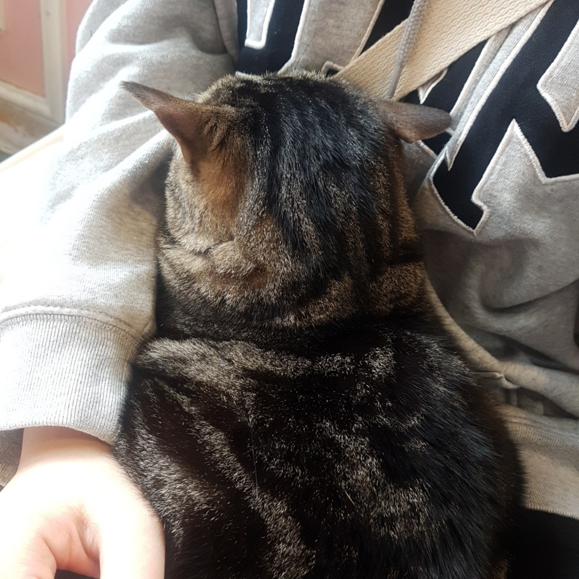
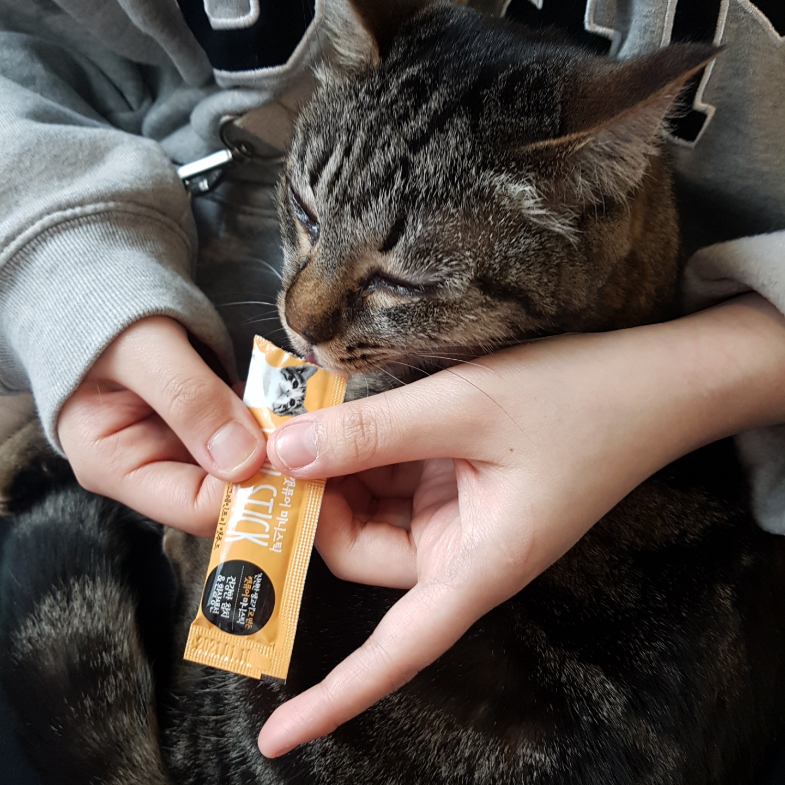
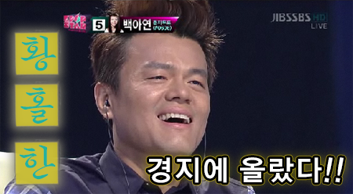
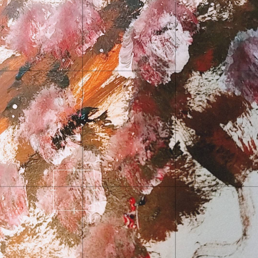
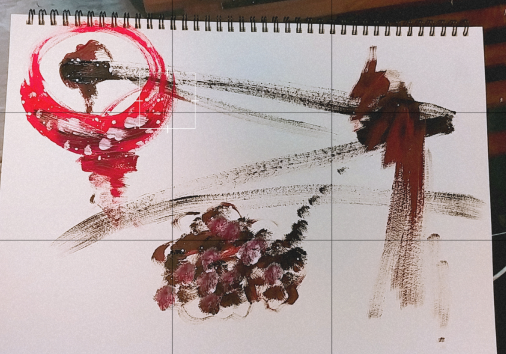
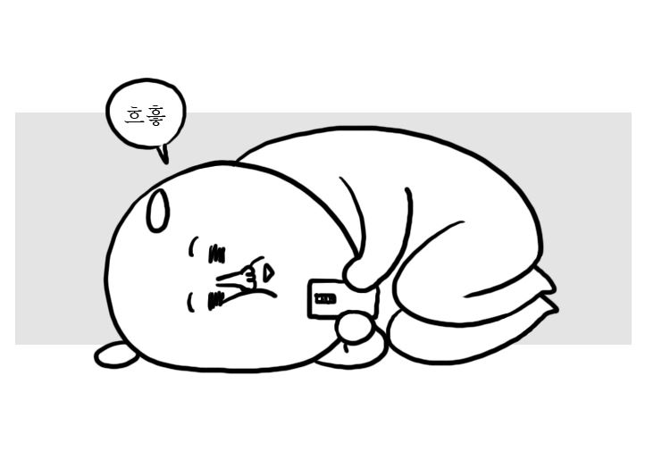
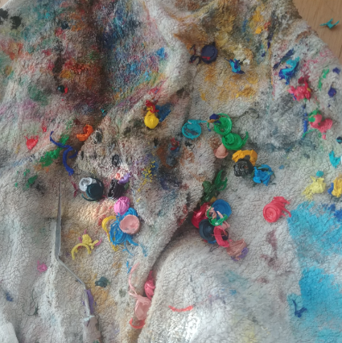
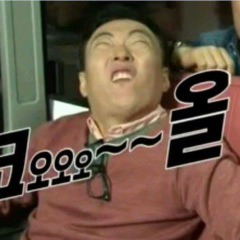

고양이 카페 간 썰
친구가 고양이카페를 가자고 해서 가보았다. 전에 고양이 카페를 갔을때는 고양이가 놀아주지 않아 아쉬웠었다. 근데 고양이 한 마리가 내가 자리에 앉자 마자 내 무릎에 앉았다
심지어 내 몸 속으로 파고 들었다.
너무 황홀하고 감격스러워 먹이도 갖다 바쳤다.
비록 한 시간정도 앉아 있다가 다른 테이블로 갔지만 선택을 받았다는 기쁨에 황홀한 하루였었다...
입시 끝나고 그림을 다시 그려보았다.
입시 끝나고 남은 아크릴 물감들이 너무 아까워 그림을 그려보기로 했다
근데 손이 굳어서 그런지 ... 귀찮아서 그런지.. 학원이랑 입시장에서 한 만큼 그림이 나오지 않았다.
그림을 완전 망치고 정말 예술품으로 가기로 했다. 초등학생이.. 그림을 그린것 같기도하고.. 정말 이상하지만 약간 있어보이기도 하고
모르겠다!!! 그래서 포기하고 다시 침대에 누워 잉여로운 생활을 보냈다.
입시가 끝나고 캐리어를 정리하였다.
입시가 끝나고 시험장에 가져갔던 물감과 붓 그리고 나머지 재료들이 들어있는 캐리어를 정리하고 봉다리에 넣으려고 꺼냈다.
물감을 정리하는데 물감에 묻어있던 똥들이 엄청 나왔다
쪼끔 곤란했지만 이때 아니면 정리 못할 것 같다는 생각에 물감에 있는 똥을 다 빼고 정리를 다 하였다.
엄청 뿌듯하였다!!!!!!!!!!!!!!!!!!
